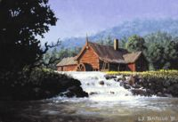
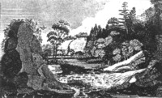

|
by
Located west of the Hudson River and immediately south of the city of Albany, Bethlehem was established as a separate town in Albany County on March 12, 1793. Before that, it was technically part of the town of Watervliet. Before that, the area was considered part of the "west manor." Prior to the 1760s, it was a larger portion of Rensselaerswyck. The name has several folk origins and was used as early as the seventeenth century. The first Dutch settlement was made within the future boundaries of Bethlehem at the mouth of the Normanskill on Castle Island in 1614. Permanent settlement began during the 1630s when the Van Rensselaers leased out farms near the river and along the Normanskill and other streams that flowed into the Hudson.  Sawmills were built along these waterways. The Bradts, La Granges, Winnes, Van Wies, and other New Netherland ancestry early Albany families were among the first farmers of the part of Rensselaerswyck known as Bethlehem. After 1750, they were joined by Scottish émigrés who also accepted Van Rensselaer leaseholds and lived in the western part of the town called "New Scotland." The so-called Bleecker Map of 1767 locates a number of the residences along the river. At that time, most of not all of the residents were at least nominally tenants of the Manor. Although a number of substantial homes were built in Bethlehem during the eighteenth century, town development effectively began with the end of the American Revolution when mills and factories began to take advantage the town's abundant water and forest resources. More elegant country seats were built on the hills overlooking the river. In 1800, the first year the town had a dedicated census, its population was 3,723. By 1820, Bethlehem's population had reached 5,114 and still was primarily agricultural. Bethlehem was connected to Albany by a river road and by the Delaware Turnpike. Bethlehem's initial 6,440 acres have been diminished by the separation of New Scotland in 1832 and the ceding of "Groesbeckville" to the city of Albany in 1874. A final adjustment with Albany and Guilderland was made in 1967. Bethlehem's border with Albany today is "the Normanskill" - a long and permanent stream that winds for many miles across south-central Albany County and empties into the Hudson River after flowing around the west side of Castle Island. Cutting deeply into the countryside, its many vales have been utilized by members of a number of early Albany families for milling and farming since the beginnings of settlement. During the latter part of the eighteenth-century, Albany merchant John Glen, Jr. bought up several tracts of Normanskill bottomland.
Sources: The most comprehensive and accessible printed source on the town is Bethlehem Revisited: A Bicentennial Story, 1793-1993, by Floyd I. Brewer, Peter R. Christoph, and others (Bethlehem Bicentennial Commission, 1993). A range of early Bethlehem records are transcribed and printed in Records of the People of the Town of Bethlehem: Albany County, New York, 1698-1880 edited by Florence and Peter R. Christoph (Bethlehem Historical Association, 1982). Online in pdf form (January 2017). For example, early settler Pieter Winne deposed that he resided in "Bethlehem" in his will of 1684. Detail from an old and often reproduced engraving. Print in the collection of the New York State Library. Of course, this page should be considered in-progress! However, its purpose is to explain Bethlehem in relation to the early history of the city of Albany. For more on Bethlehem alone, see the sources cited above. Internet based resources: Wikipedia; also recommended are the ongoing online postings of the current town historian. posted 01/07/02; last revised 1/5/17 |